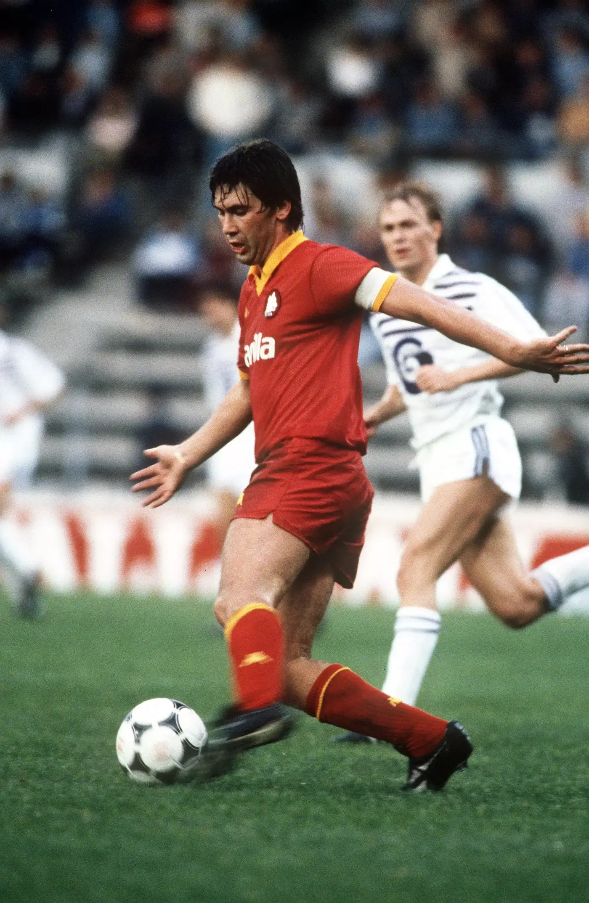
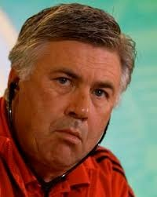

אודות קרלו אנצ'לוטי
קרלו אנצ'לוטי נולד בשנת 1959 באיטליה, ונחשב לאחת מהדמויות המוערכות ביותר בעולם הכדורגל. הוא התחיל את דרכו כשחקן בקבוצות פארמה, רומא ומילאן – שם זכה בתארים והיה חלק בלתי נפרד מנבחרת איטליה. אך את עיקר תהילתו קנה כמאמן: אנצ'לוטי הוא המאמן הראשון בהיסטוריה שזכה בליגת האלופות ארבע פעמים – עם מילאן ועם ריאל מדריד. הוא נודע בגישתו השקטה, בכבוד שהוא נותן לשחקניו וביכולת שלו לאחד חדרי הלבשה שונים. במהלך השנים אימן את מילאן, צ'לסי, פריז סן-ז'רמן, באיירן מינכן, נאפולי, אברטון, וכמובן – ריאל מדריד, שם נחשב לאהוב במיוחד על הקהל.
תמונות נבחרות
 
שיר אהוב
מוזיקה איטלקית קלאסית – שיר אהוב של Bocelli:
אהבתם את האתר?
שאלות ותשובות – Web 1.0, 2.0, 3.0
- Web 1.0: אינטרנט סטטי, המשתמשים רק קוראים מידע.
- Web 2.0: אינטרנט אינטראקטיבי – אפשר לכתוב, להגיב, לשתף.
- Web 3.0: אינטרנט מבוזר וחכם, מבוסס AI ובלוקצ'יין.
דוגמה: מחקר על "השפעות תרופות"
Web 1.0 – תקבל עמוד מאמר פשוט.
Web 2.0 – תקבל ביקורות, שאלות בפורומים, תגובות.
Web 3.0 – תקבל מידע מותאם אישית ממקורות מהימנים ומבוזרים.